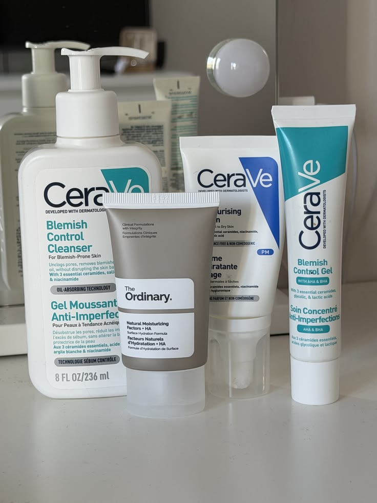
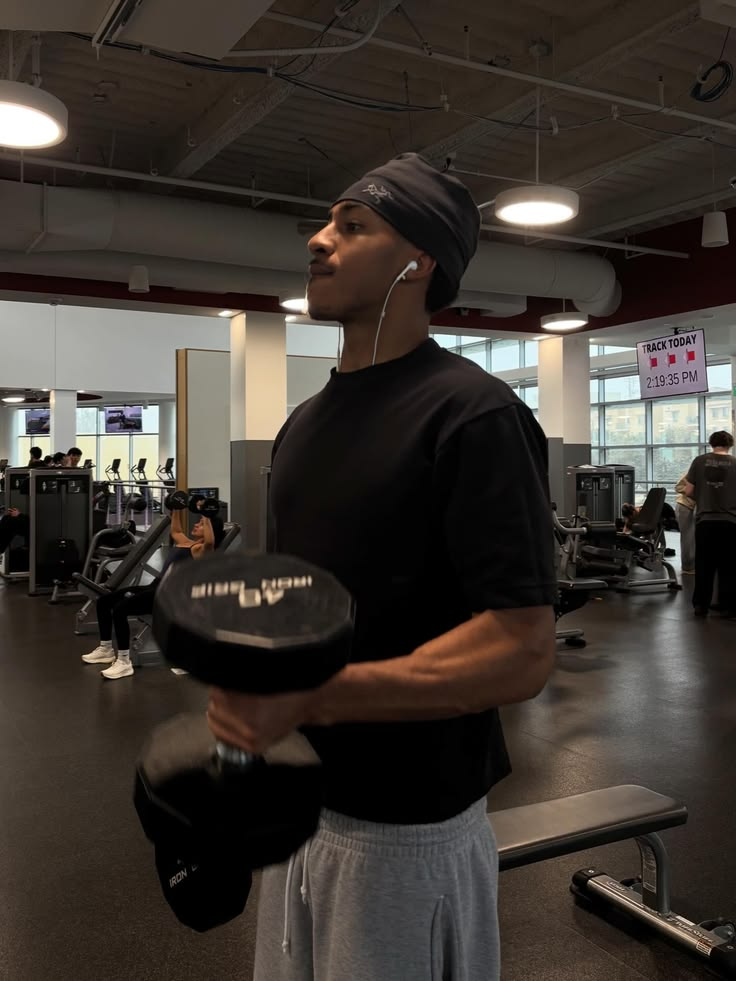
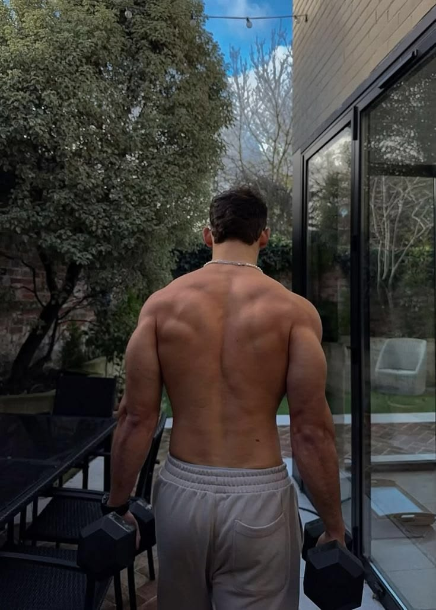
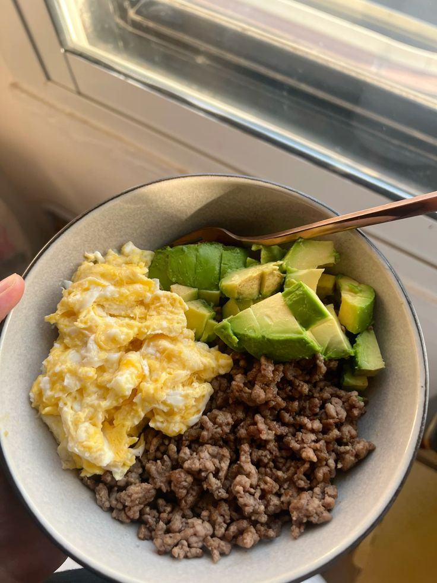
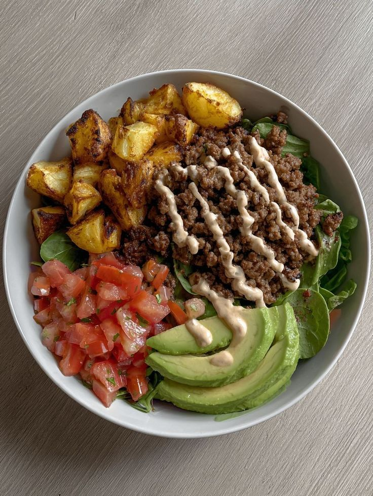
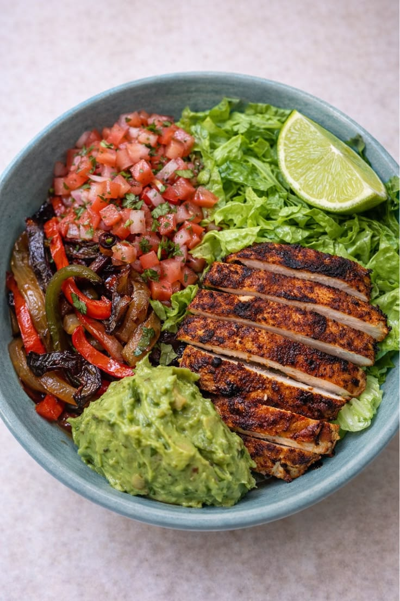
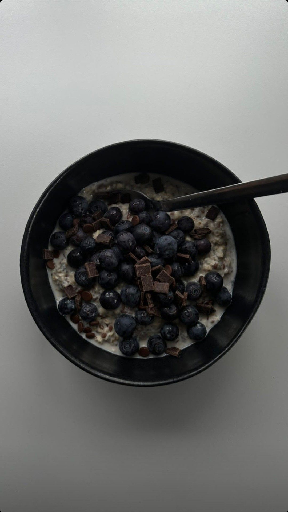

Presence is practical.
Good manners should feel calm. No performance, no speech, no weird theater. You see what needs doing and handle it.
Be honest about the world without obsessing over what you cannot control. Height helps. So do fitness, grooming, posture, style, scent, and social skill. Work the levers you actually have.
Do not cope with excuses. Do not chase perfection either. Build a cleaner version of yourself and keep going.
Not old-school theater. Just being useful, aware, and solid.
Good manners should feel calm. No performance, no speech, no weird theater. You see what needs doing and handle it.
Notice the door, the bag, the awkward silence, the person who needs a hand.
If something is off, do not wait for everyone else to act first.
Say what you mean. Do not hide behind jokes, hints, or fake mystery.
Do not turn people's business into conversation.
Show up on time, RSVP, dress for the room, and do not make people manage you.
Hold the door, help with the bags, wait until people get inside. No announcement needed.
Treat women well. Expect the same in return. A good relationship adds to a life you already respect.
Your health, work, friendships, purpose, and a good family stay important. A relationship should complement your direction, not replace it.
Be attentive and direct. If respect disappears and an honest conversation does not repair it, leave calmly.
Attraction is not enough. Choose character, consistency, and the way you are treated.
Respect a clear no. Say your own no clearly. Watch actions more than speeches.
Relationships work when both people want them and both people keep showing up.
Keep it simple. Cleanse, treat when needed, moisturize, and wear SPF. That alone puts most men ahead.

Gentle cleanser. Cetaphil, CeraVe, or La Roche-Posay are easy starting points.
Two or three times a week is plenty. Salicylic or glycolic acid can help with clogged pores and texture. Do not scrub your face raw.
Vitamin C for brightness, niacinamide for oil and redness, retinol at night if you want a slow anti-aging lane.
CeraVe AM SPF 30 is an easy morning lane. At night, use a simple moisturizer without SPF.
Broad-spectrum SPF 30 or higher. This is non-negotiable if you care about aging, dark spots, and skin health.
Fresh cut, clean neckline, facial hair shaped or shaved.
Hands are visible. Keep them clean, short, and moisturized.
Train to look better, move better, and stay useful. Keep the plan simple enough to repeat.
Learn these before chasing random machines.
Squat, deadlift, bench, overhead press, row.Stop 1-2 reps before failure. Add weight slowly.
Squat, press, row, pulldown, plank.Track lifts so progress is not a feeling.
Bench, rows, squats, lunges, RDLs.Use push/pull/legs only when recovery, food, and consistency are handled.
Planned deloads, logged lifts, real recovery.Walk often. Add intervals 1-2 times weekly if lifting recovery stays good.
Sprints, bike intervals, incline walks.

Muscle is training plus food. Protein repairs the muscle. Carbs fuel the work. Sleep makes it stick.

Eggs, Greek yogurt, chicken breast, tuna, salmon, cottage cheese.

Oats, rice, quinoa, potatoes, fruit, lentils. Eat carbs around hard sessions.

Almonds, peanuts, olive oil, salmon, whole eggs. Useful when gaining weight is hard.

Oats, Greek yogurt, fruit, eggs, or leftovers. Make the first meal boring enough to repeat.
Tofu, edamame, lentils, beans, quinoa, pumpkin seeds.
Active lifters often aim around 1.2-2.0 g protein per kg body weight per day.
Alcohol, fried food, added sugar, soda, ultra-processed snacks.
Your fragrance should feel like part of you, not like a mall sample strip. Buy from real retailers so you do not waste money on fake bottles.
YSL Y, YSL MYSLF, Bleu de Chanel.
Tom Ford Tobacco Vanille, Baccarat Rouge 540, Dior Sauvage Elixir.
Le Labo The Matcha 26, D.S. & Durga I Don't Know What, Acqua di Parma Colonia.